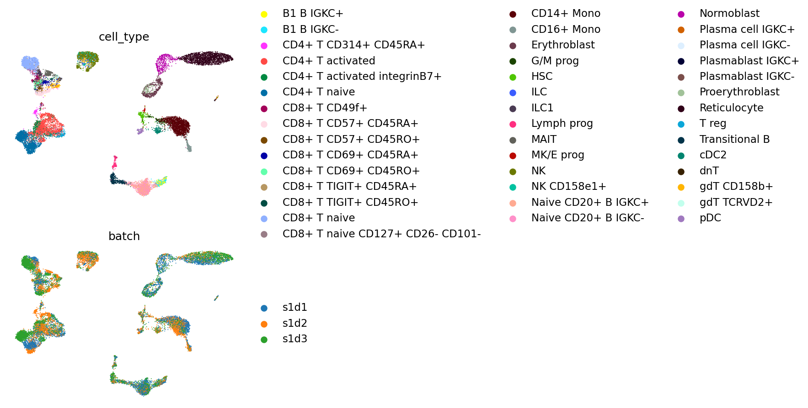
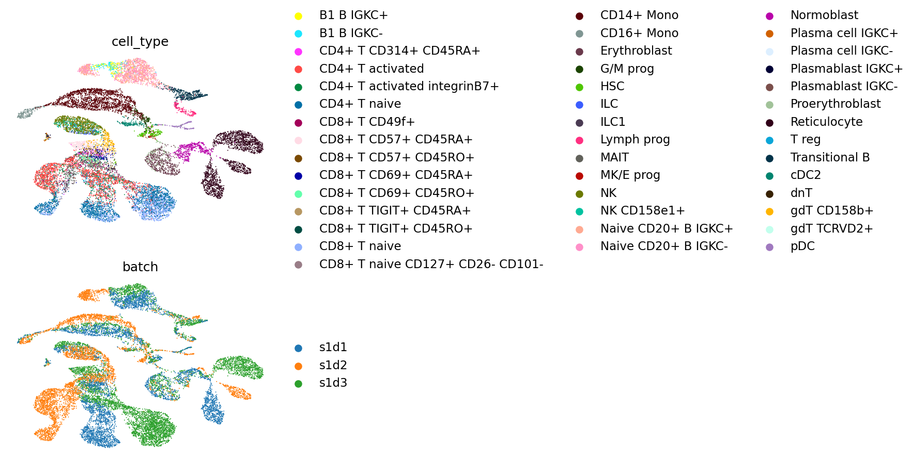
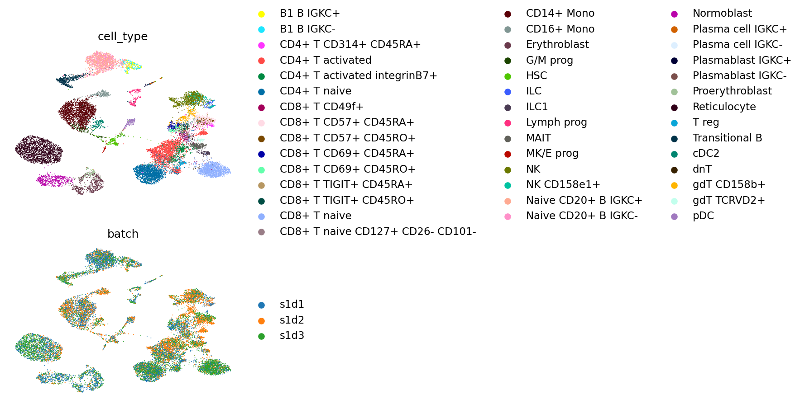
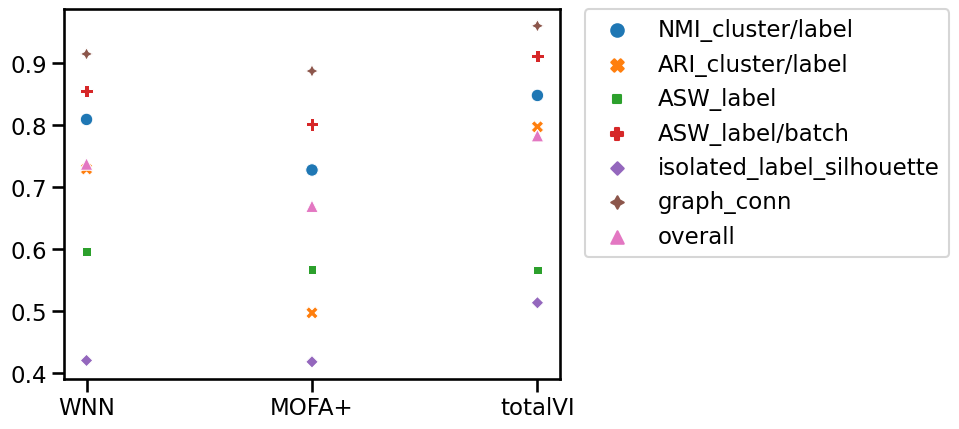
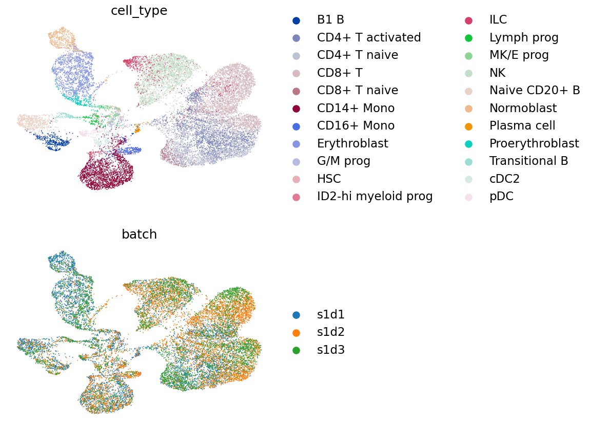

44. 配对整合#
关键要点
单细胞多模态数据（例如基因表达和染色质可及性）的整合具有挑战性，因为不同模态在维度和数据分布上各不相同；不过 MOFA+、WNN、totalVI 和 multiVI 等工具旨在应对这些挑战。
查询到参考的映射可以把新数据整合到一个已有的参考框架中，从而支持细胞类型预测、缺失模态插补（例如从 RNA-seq 数据预测蛋白丰度）等任务。
环境设置
安装 conda:
在创建环境之前，请确保 conda 已安装在您的系统中。
保存 yml 内容:
将 yml 选项卡中的内容复制到名为
environment.yml的文件中。
创建环境:
打开终端或命令提示符。
运行以下命令：
conda env create -f environment.yml
激活环境:
创建好环境后，使用以下命令激活它：
conda activate <environment_name>
替换
<environment_name>，名称就是在environment.yml文件中指定的那个。在 yml 文件里，它看起来像这样：name: <environment_name>
验证安装:
通过运行以下命令，检查环境是否创建成功：
conda env list
name: paired-integration
channels:
- conda-forge
- bioconda
- defaults
dependencies:
- conda-forge::python=3.12
- conda-forge::scanpy=1.11.5
- conda-forge::r-base=4.4
- conda-forge::r-seurat=5.1
- bioconda::bioconductor-singlecellexperiment
- conda-forge::rpy2=3.6
- bioconda::anndata2ri=1.3
- conda-forge::pytorch-cpu
- conda-forge::pip
- pip:
- muon==0.1.7
- pysam
- mofapy2==0.7.2
- scib==1.1.6
- scvi-tools==1.4.1
44.1. 动机#
近年来，出现了几种能在单细胞中测量多种模态的技术。这里的“模态”指我们能在每个细胞中捕获的不同类型的信息。例如，CITE-seq 可以在同一个细胞中测量基因表达和表面蛋白丰度；或者，使用 Multiome 检测等方法进行配对的 RNA-seq/ATAC-seq 实验，可同时捕获基因表达和染色质可及性。
我们感兴趣的是把所有可用模态的信息都纳入进来、对单细胞最为整体的表示，但在整合这些不同模态时可能会遇到若干挑战。来自不同测序技术的数据在维度上可能差异很大：RNA-seq 实验通常捕获 2 万–3 万个基因，而蛋白 panel 可能小到只有几个、多至 200 个蛋白；ATAC-seq 实验则可能有超过 200000 个峰。除了维度不同，数据还可能服从不同的分布。RNA-seq 计数常用负二项分布建模，而染色质可及性可以二值化，按“开放”或“关闭”用伯努利分布建模 [Ashuach et al., 2021]。原始 ATAC-seq 计数也可以按泊松分布建模 [Martens et al., 2022].
在这里，我们展示几种用于配对整合的工具，包括 MOFA+ [Argelaguet et al., 2020], WNN [Hao et al., 2021], totalVI [Gayoso et al., 2021] 和 multiVI [Ashuach et al., 2021]。我们使用在 2021 年 NeurIPS 会议上为单细胞数据整合挑战生成的 10x Multiome 和 CITE-seq 数据 [Luecken et al., 2021]。该数据集采集了来自 12 位健康人类供体骨髓单个核细胞的单细胞数据，在四个不同地点测量，以获得嵌套的批次效应。在本教程中，我们使用来自一个地点的 3 个批次来演示这些整合工具。
由于可用的整合工具有很多，要评估眼下某个特定任务该用哪种工具相当困难。因此，我们使用 scIB [Luecken et al., 2022] 包来辅助做这一决定，它通过定量评估来衡量整合的质量。不过需要注意，scIB 最初是为批次的单模态整合设计的，而非多模态整合。我们预计不久的将来会出现更多专门为多模态数据设计的指标，但目前我们先展示如何用 scIB 指标来比较各整合结果。
44.2. 环境设置#
import logging
import anndata as ad
import anndata2ri
import matplotlib.pyplot as plt
import muon as mu
import pandas as pd
import rpy2.rinterface_lib.callbacks
import scanpy as sc
import scib
import scipy
import scipy.io
import scvi
import seaborn as sns
from rpy2.robjects import pandas2ri
rpy2.rinterface_lib.callbacks.logger.setLevel(logging.ERROR)
pandas2ri.activate()
anndata2ri.activate()
%load_ext rpy2.ipython
import warnings
warnings.filterwarnings("ignore")
During startup - Warning message:
Setting LC_CTYPE failed, using "C"
Global seed set to 0
/lustre/groups/ml01/workspace/anastasia.litinetskaya/miniconda3/envs/paired_integration_chapter/lib/python3.9/site-packages/pytorch_lightning/utilities/warnings.py:53: LightningDeprecationWarning: pytorch_lightning.utilities.warnings.rank_zero_deprecation has been deprecated in v1.6 and will be removed in v1.8. Use the equivalent function from the pytorch_lightning.utilities.rank_zero module instead.
new_rank_zero_deprecation(
/lustre/groups/ml01/workspace/anastasia.litinetskaya/miniconda3/envs/paired_integration_chapter/lib/python3.9/site-packages/pytorch_lightning/utilities/warnings.py:58: LightningDeprecationWarning: The `pytorch_lightning.loggers.base.rank_zero_experiment` is deprecated in v1.7 and will be removed in v1.9. Please use `pytorch_lightning.loggers.logger.rank_zero_experiment` instead.
return new_rank_zero_deprecation(*args, **kwargs)
/lustre/groups/ml01/workspace/anastasia.litinetskaya/miniconda3/envs/paired_integration_chapter/lib/python3.9/site-packages/rpy2/robjects/pandas2ri.py:351: DeprecationWarning: The global conversion available with activate() is deprecated and will be removed in the next major release. Use a local converter.
warnings.warn('The global conversion available with activate() '
/lustre/groups/ml01/workspace/anastasia.litinetskaya/miniconda3/envs/paired_integration_chapter/lib/python3.9/site-packages/rpy2/robjects/numpy2ri.py:226: DeprecationWarning: The global conversion available with activate() is deprecated and will be removed in the next major release. Use a local converter.
warnings.warn('The global conversion available with activate() '
/lustre/groups/ml01/workspace/anastasia.litinetskaya/miniconda3/envs/paired_integration_chapter/lib/python3.9/site-packages/rpy2/robjects/conversion.py:28: DeprecationWarning: The use of converter in module rpy2.robjects.conversion is deprecated. Use rpy2.robjects.conversion.get_conversion() instead of rpy2.robjects.conversion.converter.
warnings.warn(
%%R
suppressPackageStartupMessages({
library(Seurat)
})
set.seed(123)
WARNING: The R package "reticulate" only fixed recently
an issue that caused a segfault when used with rpy2:
https://github.com/rstudio/reticulate/pull/1188
Make sure that you use a version of that package that includes
the fix.
44.3. CITE-seq 数据#
我们首先演示如何用 WNN、MOFA+ 和 totalVI 整合一个 CITE-seq 数据集。CITE-seq 数据包含原始基因表达计数和表面蛋白的计数。这里表面蛋白数据以抗体衍生标签（ADT）表示。详见 质量控制 一节（位于表面蛋白质章节）以了解更多细节。
44.3.1. 准备数据#
adt = sc.read(
"/lustre/groups/ml01/workspace/anastasia.litinetskaya/data/neurips-cite/adt_pp.h5ad"
)
adt
AnnData object with n_obs × n_vars = 120502 × 136
obs: 'donor', 'batch', 'n_genes_by_counts', 'log1p_n_genes_by_counts', 'total_counts', 'log1p_total_counts', 'n_counts', 'outliers'
var: 'gene_ids', 'feature_types', 'n_cells_by_counts', 'mean_counts', 'log1p_mean_counts', 'pct_dropout_by_counts', 'total_counts', 'log1p_total_counts'
uns: 'batch_colors', 'donor_colors', 'neighbors', 'pca', 'umap'
obsm: 'X_isotypes', 'X_pca', 'X_pcahm', 'X_umap'
varm: 'PCs'
layers: 'counts'
obsp: 'connectivities', 'distances'
rna = sc.read(
"/lustre/groups/ml01/workspace/anastasia.litinetskaya/data/neurips-cite/rna_hvg.h5ad"
)
rna
AnnData object with n_obs × n_vars = 90261 × 4000
obs: 'GEX_n_genes_by_counts', 'GEX_pct_counts_mt', 'GEX_size_factors', 'GEX_phase', 'ADT_n_antibodies_by_counts', 'ADT_total_counts', 'ADT_iso_count', 'cell_type', 'batch', 'ADT_pseudotime_order', 'GEX_pseudotime_order', 'Samplename', 'Site', 'DonorNumber', 'Modality', 'VendorLot', 'DonorID', 'DonorAge', 'DonorBMI', 'DonorBloodType', 'DonorRace', 'Ethnicity', 'DonorGender', 'QCMeds', 'DonorSmoker', 'is_train'
var: 'feature_types', 'gene_id', 'highly_variable', 'means', 'dispersions', 'dispersions_norm'
uns: 'dataset_id', 'genome', 'hvg', 'organism'
obsm: 'ADT_X_pca', 'ADT_X_umap', 'ADT_isotype_controls', 'GEX_X_pca', 'GEX_X_umap'
layers: 'counts'
我们将数据取子集为 Site 1 及其对应的 3 个供体，以缩短运行时间。
batches_to_keep = ["s1d1", "s1d2", "s1d3"]
rna = rna[rna.obs["batch"].isin(batches_to_keep)]
adt = adt[adt.obs["donor"].isin(batches_to_keep)]
我们只保留在两种模态对象中都存在的细胞。首先我们需要确保两个对象的 .obs_names 具有相似的结构，如果不一致则稍作整理。
adt.obs_names
Index(['AAACCCAAGGATGGCT-1-0-0-0-0-0-0-0-0-0-0-0',
'AAACCCAAGGCCTAGA-1-0-0-0-0-0-0-0-0-0-0-0',
'AAACCCAAGTGAGTGC-1-0-0-0-0-0-0-0-0-0-0-0',
'AAACCCACAAGAGGCT-1-0-0-0-0-0-0-0-0-0-0-0',
'AAACCCACATCGTGGC-1-0-0-0-0-0-0-0-0-0-0-0',
'AAACCCACATTCTCTA-1-0-0-0-0-0-0-0-0-0-0-0',
'AAACCCAGTCCGCAGT-1-0-0-0-0-0-0-0-0-0-0-0',
'AAACCCAGTGCATACT-1-0-0-0-0-0-0-0-0-0-0-0',
'AAACCCAGTTGACGGA-1-0-0-0-0-0-0-0-0-0-0-0',
'AAACCCATCGATACTG-1-0-0-0-0-0-0-0-0-0-0-0',
...
'TTTGGTTCATGTTACG-1-1-0-0-0', 'TTTGGTTGTCTCACAA-1-1-0-0-0',
'TTTGGTTTCCCATTCG-1-1-0-0-0', 'TTTGGTTTCCGTCCTA-1-1-0-0-0',
'TTTGGTTTCTTGCGCT-1-1-0-0-0', 'TTTGTTGAGAGTCTGG-1-1-0-0-0',
'TTTGTTGCAGACAATA-1-1-0-0-0', 'TTTGTTGCATGTTACG-1-1-0-0-0',
'TTTGTTGGTAGTCACT-1-1-0-0-0', 'TTTGTTGTCGCGCTGA-1-1-0-0-0'],
dtype='object', length=24326)
rna.obs_names
Index(['GCATTAGCATAAGCGG-1-s1d1', 'TACAGGTGTTAGAGTA-1-s1d1',
'AGGATCTAGGTCTACT-1-s1d1', 'GTAGAAAGTGACACAG-1-s1d1',
'TCCGAAAAGGATCATA-1-s1d1', 'CTCCCAATCCATTGGA-1-s1d1',
'GACCAATCAATTTCGG-1-s1d1', 'TTCCGGTAGTTGTAAG-1-s1d1',
'ACCTGTCAGGACTGGT-1-s1d1', 'TTCGATTTCAGGACAG-1-s1d1',
...
'GTGGTTAGTCGAGTTT-1-s1d3', 'TGAGACTCAATAGTAG-1-s1d3',
'CATGAGTTCAGCAGAG-1-s1d3', 'GCTACAACAGTGCGCT-1-s1d3',
'AGAAATGAGTGCCTCG-1-s1d3', 'AACAAAGGTTGGTACT-1-s1d3',
'TGACAGTCATGGCTGC-1-s1d3', 'CTGGCAGGTCTCACGG-1-s1d3',
'GTAACCATCGGAGTGA-1-s1d3', 'GAGTTGTCAGTCGGAA-1-s1d3'],
dtype='object', length=16311)
adt.obs_names = [
name.split("-")[0] + "-" + name.split("-")[1] + "-" + batch
for batch, name in zip(adt.obs["donor"], adt.obs_names, strict=False)
]
common_idx = list(set(rna.obs_names).intersection(set(adt.obs_names)))
rna = rna[common_idx].copy()
adt = adt[common_idx].copy()
我们需要重命名 adt 对象中的蛋白质，使基因名称和蛋白质名称不交叉。
adt.var_names = ["PROT_" + name for name in adt.var_names]
接下来我们创建 MuData 对象，用于存储两种模态的数据。
mdata = mu.MuData({"rna": rna, "adt": adt})
mdata
MuData object with n_obs × n_vars = 16294 × 4136
var: 'feature_types'
2 modalities
rna: 16294 x 4000
obs: 'GEX_n_genes_by_counts', 'GEX_pct_counts_mt', 'GEX_size_factors', 'GEX_phase', 'ADT_n_antibodies_by_counts', 'ADT_total_counts', 'ADT_iso_count', 'cell_type', 'batch', 'ADT_pseudotime_order', 'GEX_pseudotime_order', 'Samplename', 'Site', 'DonorNumber', 'Modality', 'VendorLot', 'DonorID', 'DonorAge', 'DonorBMI', 'DonorBloodType', 'DonorRace', 'Ethnicity', 'DonorGender', 'QCMeds', 'DonorSmoker', 'is_train'
var: 'feature_types', 'gene_id', 'highly_variable', 'means', 'dispersions', 'dispersions_norm'
uns: 'dataset_id', 'genome', 'hvg', 'organism'
obsm: 'ADT_X_pca', 'ADT_X_umap', 'ADT_isotype_controls', 'GEX_X_pca', 'GEX_X_umap'
layers: 'counts'
adt: 16294 x 136
obs: 'donor', 'batch', 'n_genes_by_counts', 'log1p_n_genes_by_counts', 'total_counts', 'log1p_total_counts', 'n_counts', 'outliers'
var: 'gene_ids', 'feature_types', 'n_cells_by_counts', 'mean_counts', 'log1p_mean_counts', 'pct_dropout_by_counts', 'total_counts', 'log1p_total_counts'
uns: 'batch_colors', 'donor_colors', 'neighbors', 'pca', 'umap'
obsm: 'X_isotypes', 'X_pca', 'X_pcahm', 'X_umap'
varm: 'PCs'
layers: 'counts'
obsp: 'connectivities', 'distances'我们把 batch 和 cell_type 列从其中一个模态的 adata 复制到 mdata 对象的 .obs 中，供以后可视化使用。
mdata.obs["batch"] = rna.obs["batch"].copy()
mdata.obs["cell_type"] = rna.obs["cell_type"].copy()
44.3.2. 加权最近邻（WNN）#
WNN 是一种基于图的方法：它为每种模态各取一个邻居图，并构建一个公共图，该图是各模态图的加权组合。随后，这个构建出的 WNN 图可以与基因表达矩阵一起使用，得到由 WNN 图引导的有监督 PCA（sPCA）表示。sPCA 表示可看作潜在空间中的一种嵌入。
首先，我们使用 anndata2ri 软件包（theislab/anndata2ri）把 Python 的 AnnData 对象转换为 SingleCellExperiment 和 Seurat R 对象。我们创建了更精简的 AnnData 对象版本，只包含分析所需的信息。
adata_ = ad.AnnData(adt.X.copy())
adata_.obs_names = adt.obs_names.copy()
adata_.var_names = adt.var_names.copy()
adata_.obs["batch"] = adt.obs["donor"].copy()
adata_.obsm["harmony_pca"] = adt.obsm["X_pcahm"].copy()
%%R -i adata_
# indicate that data is stored in .X of AnnData object
adt = as.Seurat(adata_, data='X', counts=NULL)
# the assay is called "originalexp" by default, we rename it to "ADT"
adt <- RenameAssays(object = adt, originalexp = "ADT", verbose=FALSE)
adt
An object of class Seurat
136 features across 16294 samples within 1 assay
Active assay: ADT (136 features, 0 variable features)
1 dimensional reduction calculated: harmony_pca
我们对 RNA 数据重复同样的操作。
adata_ = ad.AnnData(rna.X.copy())
adata_.obs_names = rna.obs_names.copy()
adata_.var_names = rna.var_names.copy()
adata_.obs["cell_type"] = rna.obs["cell_type"].copy()
adata_.obs["batch"] = rna.obs["batch"].copy()
%%R -i adata_
rna = as.Seurat(adata_, data='X', counts=NULL)
rna
An object of class Seurat
4000 features across 16294 samples within 1 assay
Active assay: originalexp (4000 features, 0 variable features)
接下来，我们用两种测定（assay）创建一个 Seurat 对象。
%%R
cite <- rna
cite[["ADT"]] <- CreateAssayObject(data = adt@assays$ADT@data)
%%R
cite <- RenameAssays(object = cite, originalexp = "RNA", verbose=FALSE)
由于数据集中有多个批次，在整合各模态之前需要先做批次校正。一种选择是使用 Seurat 的 FindIntegrationAnchors() 和 IntegrateData() (见 https://satijalab.org/seurat/articles/integration_introduction.html）函数分别对每种模态进行批次校正。我们将使用此前分别对 ADT 和 RNA 数据所做分析得到的批次校正嵌入，即 ADT 用 Harmony 校正后的 PCA 嵌入、RNA 用 scVI 批次校正后的潜在嵌入。
%%R
# TODO need to change after we have the preprocessed data, for now RNA is not batch-corrected
DefaultAssay(cite) <- "RNA"
VariableFeatures(cite) <- rownames(cite)
cite <- ScaleData(cite, verbose=FALSE)
cite <- RunPCA(cite, verbose=FALSE)
%%R
cite@reductions$harmony_pca <- adt@reductions$harmony_pca
cite
An object of class Seurat
4136 features across 16294 samples within 2 assays
Active assay: RNA (4000 features, 4000 variable features)
1 other assay present: ADT
2 dimensional reductions calculated: pca, harmony_pca
现在，我们按照 WNN 的教程（vignette）来进行分析。首先，我们需要用为每种模态指定的降维结果来寻找多模态邻居。这个函数会向 Seurat 对象添加一个 WNN 图。
%%R
cite <- FindMultiModalNeighbors(
cite,
reduction.list = list("pca", "harmony_pca"),
dims.list = list(1:50, 1:30),
modality.weight.name = "RNA.weight",
verbose = FALSE
)
由于我们也有兴趣为我们的多模态数据找到一种嵌入表示，因此，我们进一步运行 RunSPCA() 函数，它使用 RNA 基因表达数据和 WNN 图来做有监督 PCA。有监督 PCA 是标准 PCA 的“引导”版本：它在 WNN 图的引导下对基因表达数据运行，以更好地保留 WNN 图中学到的细胞间关系。稍后我们还需要一个参考 UMAP，用于把 RNA 查询映射到这个多模态参考上，相关内容见 高级整合.
%%R
cite <- RunSPCA(cite, assay = "RNA", graph = "wsnn", npcs = 20)
cite <- RunUMAP(cite, nn.name = "weighted.nn", reduction.name = "wnn.umap", reduction.key = "wnnUMAP_", return.model=TRUE)
%%R
cite
An object of class Seurat
4136 features across 16294 samples within 2 assays
Active assay: RNA (4000 features, 4000 variable features)
1 other assay present: ADT
4 dimensional reductions calculated: pca, harmony_pca, spca, wnn.umap
我们把 Seurat 对象保存为 .rds 文件，用于 高级整合 节。
%%R
saveRDS(cite, file = "wnn_ref.rds")
我们把 sPCA 嵌入移到 Python，然后把它们存放在 MuData 对象的 .obsm 中。
%%R -o spca
spca = Embeddings(object = cite[["spca"]])
mdata.obsm["X_spca"] = spca
我们还需要提取计算出来的 WNN 图。
%%R -o wnn
wnn <- as.data.frame(summary(cite@graphs$wknn))
该表给出了 WNN 图中细胞之间存在连接的索引。由于 R 从 1 开始索引，而 Python 从 0 开始，我们将索引改为从 0 开始。
wnn[:5]
| i | j | x | |
|---|---|---|---|
| 1 | 1 | 1 | 1.0 |
| 2 | 202 | 1 | 1.0 |
| 3 | 787 | 1 | 1.0 |
| 4 | 1628 | 1 | 1.0 |
| 5 | 2076 | 1 | 1.0 |
wnn["i"] = wnn["i"] - 1
wnn["j"] = wnn["j"] - 1
wnn[:5]
| i | j | x | |
|---|---|---|---|
| 1 | 0 | 0 | 1.0 |
| 2 | 201 | 0 | 1.0 |
| 3 | 786 | 0 | 1.0 |
| 4 | 1627 | 0 | 1.0 |
| 5 | 2075 | 0 | 1.0 |
我们把该图存储到 MuData 对象的 .obsp 中。
mdata.obsp["wnn_connectivities"] = scipy.sparse.coo_matrix(
(wnn["x"], (wnn["i"], wnn["j"]))
)
接下来我们用 WNN 图计算 UMAP 坐标并将其保存到 .obsm['X_umap_wnn']。我们也可以只用 sPCA 坐标来做可视化。
# we won't actually need the neighbors
# but need to run this anyway as a little trick to make scanpy work with externally-computed neighbors
sc.pp.neighbors(mdata, use_rep="X_spca")
mdata.obsp["connectivities"] = mdata.obsp["wnn_connectivities"].copy()
# delete distances to make sure we are not using anything calculated with sc.pp.neighbors()
del mdata.obsp["distances"]
sc.tl.umap(mdata)
mdata.obsm["X_umap_wnn"] = mdata.obsm["X_umap"].copy()
最后，我们在 UMAP 上绘制细胞类型和批次。
mu.pl.embedding(
mdata, color=["cell_type", "batch"], ncols=1, basis="umap_wnn", frameon=False
)

为了能够从数量上评估整合的结果，并与其他方法进行比较，我们用 sPCA 嵌入和 WNN 图计算出一些 scIB 指标。更具体地说，我们计算以下指标：
生物保守性：
NMI_cluster/label,ARI_cluster/label,ASW_label和isolated_label_silhouette;批次校正：
ASW_label/batch,graph_conn.
scib_anndata = sc.AnnData(mdata.obsm["X_spca"]).copy()
scib_anndata.obs = mdata.obs.copy()
scib_anndata.obsp["connectivities"] = mdata.obsp["connectivities"].copy()
scib_anndata.obsm["X_spca"] = mdata.obsm["X_spca"].copy()
metrics_wnn = scib.metrics.metrics(
scib_anndata,
scib_anndata,
batch_key="batch",
label_key="cell_type",
embed="X_spca",
ari_=True,
nmi_=True,
silhouette_=True,
graph_conn_=True,
isolated_labels_asw_=True,
)
metrics_wnn
NMI...
ARI...
Silhouette score...
Isolated labels ASW...
Graph connectivity...
| 0 | |
|---|---|
| NMI_cluster/label | 0.808672 |
| ARI_cluster/label | 0.729036 |
| ASW_label | 0.595822 |
| ASW_label/batch | 0.854867 |
| PCR_batch | NaN |
| cell_cycle_conservation | NaN |
| isolated_label_F1 | NaN |
| isolated_label_silhouette | 0.420527 |
| graph_conn | 0.914140 |
| kBET | NaN |
| iLISI | NaN |
| cLISI | NaN |
| hvg_overlap | NaN |
| trajectory | NaN |
我们注意到，尽管批次校正是用 Harmony（针对 ADT）和 scVI（针对 RNA）完成的，但这里我们仍然纳入了评估批次校正的指标。
44.3.3. 多组学因子分析（MOFA+）#
MOFA+ 是一种线性因子模型，它把输入矩阵分解为若干低秩矩阵的乘积。这种低秩表示可用作低维空间中的嵌入，用于可视化和其他下游任务。其潜在维度相对于原始输入特征是可解释的，代表了数据中变异的主要来源。
默认情况下，我们使用的数据来自 .X 并且数据应当已归一化。由于数据中存在一些 MOFA+ 可以校正的批次效应，我们还传入 groups_label 参数以指定批次协变量。
如果你想在 GPU 上运行 MOFA+，需要额外安装一个与你的 CUDA 兼容的 cuPY 版本（https://cupy.dev）。
mu.tl.mofa(mdata, groups_label="batch", gpu_mode=True)
#########################################################
### __ __ ____ ______ ###
### | \/ |/ __ \| ____/\ _ ###
### | \ / | | | | |__ / \ _| |_ ###
### | |\/| | | | | __/ /\ \_ _| ###
### | | | | |__| | | / ____ \|_| ###
### |_| |_|\____/|_|/_/ \_\ ###
### ###
#########################################################
Loaded view='rna' group='s1d1' with N=5219 samples and D=4000 features...
Loaded view='rna' group='s1d3' with N=4975 samples and D=4000 features...
Loaded view='rna' group='s1d2' with N=6100 samples and D=4000 features...
Loaded view='adt' group='s1d1' with N=5219 samples and D=136 features...
Loaded view='adt' group='s1d3' with N=4975 samples and D=136 features...
Loaded view='adt' group='s1d2' with N=6100 samples and D=136 features...
Model options:
- Automatic Relevance Determination prior on the factors: True
- Automatic Relevance Determination prior on the weights: True
- Spike-and-slab prior on the factors: False
- Spike-and-slab prior on the weights: True
Likelihoods:
- View 0 (rna): gaussian
- View 1 (adt): gaussian
GPU mode is activated
######################################
## Training the model with seed 1 ##
######################################
Converged!
#######################
## Training finished ##
#######################
Saving model in /tmp/mofa_20230103-162506.hdf5...
Saved MOFA embeddings in .obsm['X_mofa'] slot and their loadings in .varm['LFs'].
我们用 X_mofa 表示来计算近邻和 UMAP 坐标，并将其存储到 .obsm['X_umap_mofa'].
sc.pp.neighbors(mdata, use_rep="X_mofa")
sc.tl.umap(mdata)
mdata.obsm["X_umap_mofa"] = mdata.obsm["X_umap"].copy()
我们再次在生成的 UMAP 上绘制细胞类型和批次。
mu.pl.embedding(
mdata, color=["cell_type", "batch"], ncols=1, basis="umap_mofa", frameon=False
)

最后，我们计算与之前相同的 scIB 指标。
scib_anndata = sc.AnnData(mdata.obsm["X_mofa"]).copy()
scib_anndata.obs = mdata.obs.copy()
scib_anndata.obsp["connectivities"] = mdata.obsp["connectivities"].copy()
scib_anndata.obsm["X_mofa"] = mdata.obsm["X_mofa"].copy()
metrics_mofa = scib.metrics.metrics(
scib_anndata,
scib_anndata,
batch_key="batch",
label_key="cell_type",
embed="X_mofa",
ari_=True,
nmi_=True,
silhouette_=True,
graph_conn_=True,
isolated_labels_asw_=True,
)
metrics_mofa
NMI...
ARI...
Silhouette score...
Isolated labels ASW...
Graph connectivity...
| 0 | |
|---|---|
| NMI_cluster/label | 0.727261 |
| ARI_cluster/label | 0.497166 |
| ASW_label | 0.566888 |
| ASW_label/batch | 0.800875 |
| PCR_batch | NaN |
| cell_cycle_conservation | NaN |
| isolated_label_F1 | NaN |
| isolated_label_silhouette | 0.418293 |
| graph_conn | 0.886662 |
| kBET | NaN |
| iLISI | NaN |
| cLISI | NaN |
| hvg_overlap | NaN |
| trajectory | NaN |
44.3.4. 全变分推断（totalVI）#
totalVI 是一种基于变分推断的方法，用于对配对的基因表达和蛋白丰度测量进行联合分析。它考虑了批次效应和蛋白背景噪声，使模型能够学到一个与技术因素解耦的联合潜在表示。totalVI 用负二项（NB）分布对转录组计数建模，并把蛋白计数建模为前景信号与背景信号的 NB 混合。因此，模型以原始基因表达和原始蛋白计数作为输入。
adata = mdata["rna"].copy()
adata.obsm["protein_expression"] = mdata["adt"].layers["counts"].A.copy()
我们需要指定 RNA 的原始计数存储在 counts 层中；并且我们希望对批次效应进行校正，使用的是 batch_key="batch" 参数。
scvi.model.TOTALVI.setup_anndata(
adata,
protein_expression_obsm_key="protein_expression",
layer="counts",
batch_key="batch",
)
No GPU/TPU found, falling back to CPU. (Set TF_CPP_MIN_LOG_LEVEL=0 and rerun for more info.)
INFO Generating sequential column names
我们初始化 totalVI 模型。
vae = scvi.model.TOTALVI(adata)
INFO Computing empirical prior initialization for protein background.
接下来，我们用默认参数训练模型。
vae.train()
GPU available: True (cuda), used: True
TPU available: False, using: 0 TPU cores
IPU available: False, using: 0 IPUs
HPU available: False, using: 0 HPUs
LOCAL_RANK: 0 - CUDA_VISIBLE_DEVICES: [0]
Epoch 340/400: 85%|████████▌ | 340/400 [08:00<01:22, 1.37s/it, loss=1.65e+03, v_num=1]Epoch 00340: reducing learning rate of group 0 to 2.4000e-03.
Epoch 400/400: 100%|██████████| 400/400 [09:22<00:00, 1.37s/it, loss=1.64e+03, v_num=1]
`Trainer.fit` stopped: `max_epochs=400` reached.
Epoch 400/400: 100%|██████████| 400/400 [09:22<00:00, 1.41s/it, loss=1.64e+03, v_num=1]
接下来，我们得到潜在表示并将其存储到 .obsm['X_totalVI'] ，然后用它来计算 UMAP 坐标。
mdata.obsm["X_totalVI"] = vae.get_latent_representation()
sc.pp.neighbors(mdata, use_rep="X_totalVI")
sc.tl.umap(mdata)
mdata.obsm["X_umap_totalVI"] = mdata.obsm["X_umap"].copy()
如上所述，我们在 UMAP 上绘制细胞类型和批次。
mu.pl.embedding(
mdata, color=["cell_type", "batch"], ncols=1, basis="umap_totalVI", frameon=False
)

最后，我们计算 scIB 指标。
scib_anndata = sc.AnnData(mdata.obsm["X_totalVI"]).copy()
scib_anndata.obs = mdata.obs.copy()
scib_anndata.obsp["connectivities"] = mdata.obsp["connectivities"].copy()
scib_anndata.obsm["X_totalVI"] = mdata.obsm["X_totalVI"].copy()
metrics_totalvi = scib.metrics.metrics(
scib_anndata,
scib_anndata,
batch_key="batch",
label_key="cell_type",
embed="X_totalVI",
ari_=True,
nmi_=True,
silhouette_=True,
graph_conn_=True,
isolated_labels_asw_=True,
)
metrics_totalvi
/lustre/groups/ml01/workspace/anastasia.litinetskaya/miniconda3/envs/paired_integration_chapter/lib/python3.9/site-packages/scib/metrics/metrics.py:293: DeprecationWarning: Call to deprecated function (or staticmethod) opt_louvain.
res_max, nmi_max, nmi_all = opt_louvain(
NMI...
ARI...
Silhouette score...
Isolated labels ASW...
Graph connectivity...
| 0 | |
|---|---|
| NMI_cluster/label | 0.847325 |
| ARI_cluster/label | 0.796760 |
| ASW_label | 0.566315 |
| ASW_label/batch | 0.910679 |
| PCR_batch | NaN |
| cell_cycle_conservation | NaN |
| isolated_label_F1 | NaN |
| isolated_label_silhouette | 0.513436 |
| graph_conn | 0.959439 |
| kBET | NaN |
| iLISI | NaN |
| cLISI | NaN |
| hvg_overlap | NaN |
| trajectory | NaN |
44.3.5. scIB 指标评估#
为了更清楚地看出各模型性能的差异，我们把每种方法的 scIB 输出可视化。我们需要把这些输出 DataFrame 合并成一个，并额外计算每种方法的总分。我们沿用 scIB 论文的做法，把总分计算为： 0.4 * batch_correction_metrics + 0.6 * bio_conservation_metrics.
metrics = pd.DataFrame([metrics_wnn[0], metrics_mofa[0], metrics_totalvi[0]])
metrics = metrics.set_index(pd.Index(["WNN", "MOFA+", "totalVI"]))
metrics = metrics.dropna(axis=1)
metrics
| NMI_cluster/label | ARI_cluster/label | ASW_label | ASW_label/batch | isolated_label_silhouette | graph_conn | |
|---|---|---|---|---|---|---|
| WNN | 0.808672 | 0.729036 | 0.595822 | 0.854867 | 0.420527 | 0.914140 |
| MOFA+ | 0.727261 | 0.497166 | 0.566888 | 0.800875 | 0.418293 | 0.886662 |
| totalVI | 0.847325 | 0.796760 | 0.566315 | 0.910679 | 0.513436 | 0.959439 |
metrics["overall"] = (
0.4 * (metrics["ASW_label/batch"] + metrics["graph_conn"]) / 2
+ 0.6
* (
metrics["NMI_cluster/label"]
+ metrics["ARI_cluster/label"]
+ metrics["ASW_label"]
+ metrics["isolated_label_silhouette"]
)
/ 4
)
metrics
| NMI_cluster/label | ARI_cluster/label | ASW_label | ASW_label/batch | isolated_label_silhouette | graph_conn | overall | |
|---|---|---|---|---|---|---|---|
| WNN | 0.808672 | 0.729036 | 0.595822 | 0.854867 | 0.420527 | 0.914140 | 0.736910 |
| MOFA+ | 0.727261 | 0.497166 | 0.566888 | 0.800875 | 0.418293 | 0.886662 | 0.668948 |
| totalVI | 0.847325 | 0.796760 | 0.566315 | 0.910679 | 0.513436 | 0.959439 | 0.782599 |
sns.scatterplot(data=metrics)
plt.legend(bbox_to_anchor=(1.05, 1), loc="upper left", borderaxespad=0)
<matplotlib.legend.Legend at 0x7f6f9a129280>

我们观察到 totalVI 获得了最高的总分，因此我们将在笔记本后面使用 totalVI 的嵌入，来展示如何同时利用 ADT 和 RNA 标记对潜在空间中的聚类进行注释。视下游任务和实验设计而定，基于某个特定指标来选择表现最好的方法是可取的。
44.4. Multiome 数据#
为了表明整合方法也能用于 multiome（即配对的 RNA-seq 和 ATAC-seq）数据，我们演示如何把 multiVI 用于这一任务。需要说明的是，WNN 和 MOFA+ 也可以用与上面几乎完全相同的代码在 multiome 数据上运行，所以这里我们只展示 multiVI——它底层的模型与 totalVI 不同。
44.4.1. 准备数据#
atac = sc.read(
"/lustre/groups/ml01/workspace/anastasia.litinetskaya/data/neurips-multiome/atac_hvf.h5ad"
)
atac
AnnData object with n_obs × n_vars = 69249 × 40002
obs: 'GEX_pct_counts_mt', 'GEX_n_counts', 'GEX_n_genes', 'GEX_size_factors', 'GEX_phase', 'ATAC_nCount_peaks', 'ATAC_atac_fragments', 'ATAC_reads_in_peaks_frac', 'ATAC_blacklist_fraction', 'ATAC_nucleosome_signal', 'cell_type', 'batch', 'ATAC_pseudotime_order', 'GEX_pseudotime_order', 'Samplename', 'Site', 'DonorNumber', 'Modality', 'VendorLot', 'DonorID', 'DonorAge', 'DonorBMI', 'DonorBloodType', 'DonorRace', 'Ethnicity', 'DonorGender', 'QCMeds', 'DonorSmoker', 'cell_type_l2', 'cell_type_l1', 'cell_type_l3', 'assay'
var: 'feature_types', 'gene_id', 'n_cells', 'prop_shared_cells', 'variability_score'
uns: 'ATAC_gene_activity_var_names', 'dataset_id', 'genome', 'organism'
obsm: 'ATAC_gene_activity', 'ATAC_lsi_full', 'ATAC_lsi_red', 'ATAC_umap', 'GEX_X_pca', 'GEX_X_umap'
layers: 'binary', 'counts', 'cpm', 'tf-idf', 'tf-idf-binary', 'tf-idf-counts'
rna = sc.read(
"/lustre/groups/ml01/workspace/anastasia.litinetskaya/data/neurips-multiome/rna_hvg.h5ad"
)
rna
AnnData object with n_obs × n_vars = 69249 × 4000
obs: 'GEX_pct_counts_mt', 'GEX_n_counts', 'GEX_n_genes', 'GEX_size_factors', 'GEX_phase', 'ATAC_nCount_peaks', 'ATAC_atac_fragments', 'ATAC_reads_in_peaks_frac', 'ATAC_blacklist_fraction', 'ATAC_nucleosome_signal', 'cell_type', 'batch', 'ATAC_pseudotime_order', 'GEX_pseudotime_order', 'Samplename', 'Site', 'DonorNumber', 'Modality', 'VendorLot', 'DonorID', 'DonorAge', 'DonorBMI', 'DonorBloodType', 'DonorRace', 'Ethnicity', 'DonorGender', 'QCMeds', 'DonorSmoker'
var: 'feature_types', 'gene_id', 'highly_variable', 'means', 'dispersions', 'dispersions_norm'
uns: 'ATAC_gene_activity_var_names', 'Site_colors', 'batch_colors', 'cell_type_colors', 'dataset_id', 'genome', 'hvg', 'organism'
obsm: 'ATAC_gene_activity', 'ATAC_lsi_full', 'ATAC_lsi_red', 'ATAC_umap', 'GEX_X_pca', 'GEX_X_umap', 'X_umap'
layers: 'counts'
我们再次把数据取子集为一个站点和三个批次。
batches_to_keep = ["s1d1", "s1d2", "s1d3"]
rna = rna[rna.obs["batch"].isin(batches_to_keep)]
atac = atac[atac.obs["batch"].isin(batches_to_keep)]
mdata_multiome = mu.MuData({"rna": rna, "atac": atac})
mdata_multiome
MuData object with n_obs × n_vars = 17243 × 44002
var: 'feature_types', 'gene_id'
2 modalities
rna: 17243 x 4000
obs: 'GEX_pct_counts_mt', 'GEX_n_counts', 'GEX_n_genes', 'GEX_size_factors', 'GEX_phase', 'ATAC_nCount_peaks', 'ATAC_atac_fragments', 'ATAC_reads_in_peaks_frac', 'ATAC_blacklist_fraction', 'ATAC_nucleosome_signal', 'cell_type', 'batch', 'ATAC_pseudotime_order', 'GEX_pseudotime_order', 'Samplename', 'Site', 'DonorNumber', 'Modality', 'VendorLot', 'DonorID', 'DonorAge', 'DonorBMI', 'DonorBloodType', 'DonorRace', 'Ethnicity', 'DonorGender', 'QCMeds', 'DonorSmoker'
var: 'feature_types', 'gene_id', 'highly_variable', 'means', 'dispersions', 'dispersions_norm'
uns: 'ATAC_gene_activity_var_names', 'Site_colors', 'batch_colors', 'cell_type_colors', 'dataset_id', 'genome', 'hvg', 'organism'
obsm: 'ATAC_gene_activity', 'ATAC_lsi_full', 'ATAC_lsi_red', 'ATAC_umap', 'GEX_X_pca', 'GEX_X_umap', 'X_umap'
layers: 'counts'
atac: 17243 x 40002
obs: 'GEX_pct_counts_mt', 'GEX_n_counts', 'GEX_n_genes', 'GEX_size_factors', 'GEX_phase', 'ATAC_nCount_peaks', 'ATAC_atac_fragments', 'ATAC_reads_in_peaks_frac', 'ATAC_blacklist_fraction', 'ATAC_nucleosome_signal', 'cell_type', 'batch', 'ATAC_pseudotime_order', 'GEX_pseudotime_order', 'Samplename', 'Site', 'DonorNumber', 'Modality', 'VendorLot', 'DonorID', 'DonorAge', 'DonorBMI', 'DonorBloodType', 'DonorRace', 'Ethnicity', 'DonorGender', 'QCMeds', 'DonorSmoker', 'cell_type_l2', 'cell_type_l1', 'cell_type_l3', 'assay'
var: 'feature_types', 'gene_id', 'n_cells', 'prop_shared_cells', 'variability_score'
uns: 'ATAC_gene_activity_var_names', 'dataset_id', 'genome', 'organism'
obsm: 'ATAC_gene_activity', 'ATAC_lsi_full', 'ATAC_lsi_red', 'ATAC_umap', 'GEX_X_pca', 'GEX_X_umap'
layers: 'binary', 'counts', 'cpm', 'tf-idf', 'tf-idf-binary', 'tf-idf-counts'mdata_multiome.obs["batch"] = mdata_multiome["rna"].obs["batch"].copy()
mdata_multiome.obs["cell_type"] = mdata_multiome["rna"].obs["cell_type"].copy()
44.4.2. MultiVI#
multiVI 同样基于变分推断和条件变分自编码器。基因表达计数的建模方式与 totalVI 完全相同，即使用原始计数和 NB 分布。而染色质可及性则用伯努利分布建模，刻画某个特定区域开放的可能性。因此，ATAC 测定的输入数据必须是二值的：0 表示关闭区域，1 表示开放区域。
n_genes = len(rna.var_names)
n_regions = len(atac.var_names)
multiVI 需要一个把基因和峰拼接起来作为特征的 AnnData 对象。由于我们一开始为每种模态各有一个不同的对象、但测量是配对的，我们可以用下面的技巧把这两个 AnnData 对象沿特征轴拼接起来。
adata_paired = ad.concat([rna.copy().T, atac.copy().T]).T
adata_paired.obs = adata_paired.obs.join(rna.obs[["cell_type", "batch"]])
adata_paired.obs["modality"] = "paired"
adata_paired
AnnData object with n_obs × n_vars = 17243 × 44002
obs: 'cell_type', 'batch', 'modality'
var: 'feature_types', 'gene_id'
layers: 'counts'
adata_mvi = scvi.data.organize_multiome_anndatas(adata_paired)
为确保把原始计数作为输入传给模型，我们也把 layer='counts' 输入 setup_anndata 函数。
scvi.model.MULTIVI.setup_anndata(
adata_mvi,
batch_key="modality",
categorical_covariate_keys=["batch"],
layer="counts",
)
我们初始化 MultiVI 模型。
mvi = scvi.model.MULTIVI(
adata_mvi,
n_genes=n_genes,
n_regions=n_regions,
)
接下来，我们用默认参数训练模型。
mvi.train()
GPU available: True (cuda), used: True
TPU available: False, using: 0 TPU cores
IPU available: False, using: 0 IPUs
HPU available: False, using: 0 HPUs
/lustre/groups/ml01/workspace/anastasia.litinetskaya/miniconda3/envs/paired_integration_chapter/lib/python3.9/site-packages/pytorch_lightning/trainer/configuration_validator.py:267: LightningDeprecationWarning: The `Callback.on_epoch_end` hook was deprecated in v1.6 and will be removed in v1.8. Please use `Callback.on_<train/validation/test>_epoch_end` instead.
rank_zero_deprecation(
LOCAL_RANK: 0 - CUDA_VISIBLE_DEVICES: [0]
Epoch 106/500: 21%|██ | 106/500 [11:30<42:46, 6.51s/it, loss=4.47e+03, v_num=1]
Monitored metric reconstruction_loss_validation did not improve in the last 50 records. Best score: 9223.312. Signaling Trainer to stop.
最后，我们把潜在嵌入可视化到 UMAP 上。
mdata_multiome.obsm["X_multiVI"] = mvi.get_latent_representation()
sc.pp.neighbors(mdata_multiome, use_rep="X_multiVI")
sc.tl.umap(mdata_multiome)
mdata_multiome.obsm["X_umap_multiVI"] = mdata_multiome.obsm["X_umap"].copy()
mu.pl.embedding(
mdata_multiome,
color=["cell_type", "batch"],
ncols=1,
basis="umap_multiVI",
frameon=False,
)

会话信息。
%%R
sessionInfo()
R version 4.2.2 (2022-10-31)
Platform: x86_64-conda-linux-gnu (64-bit)
Running under: CentOS Linux 7 (Core)
Matrix products: default
BLAS/LAPACK: /lustre/groups/ml01/workspace/anastasia.litinetskaya/miniconda3/envs/paired_integration_chapter/lib/libopenblasp-r0.3.21.so
locale:
[1] LC_CTYPE=C LC_NUMERIC=C
[3] LC_TIME=en_US.UTF-8 LC_COLLATE=en_US.UTF-8
[5] LC_MONETARY=en_US.UTF-8 LC_MESSAGES=en_US.UTF-8
[7] LC_PAPER=en_US.UTF-8 LC_NAME=C
[9] LC_ADDRESS=C LC_TELEPHONE=C
[11] LC_MEASUREMENT=en_US.UTF-8 LC_IDENTIFICATION=C
attached base packages:
[1] stats4 tools stats graphics grDevices utils datasets
[8] methods base
other attached packages:
[1] Matrix_1.5-3 SingleCellExperiment_1.20.0
[3] SummarizedExperiment_1.28.0 Biobase_2.58.0
[5] GenomicRanges_1.50.0 GenomeInfoDb_1.34.1
[7] IRanges_2.32.0 MatrixGenerics_1.10.0
[9] matrixStats_0.63.0 S4Vectors_0.36.0
[11] BiocGenerics_0.44.0 SeuratObject_4.1.3
[13] Seurat_4.3.0
loaded via a namespace (and not attached):
[1] Rtsne_0.16 colorspace_2.0-3 deldir_1.0-6
[4] ellipsis_0.3.2 ggridges_0.5.4 XVector_0.38.0
[7] spatstat.data_3.0-0 leiden_0.4.3 listenv_0.9.0
[10] ggrepel_0.9.2 fansi_1.0.3 codetools_0.2-18
[13] splines_4.2.2 polyclip_1.10-4 jsonlite_1.8.4
[16] ica_1.0-3 cluster_2.1.4 png_0.1-8
[19] uwot_0.1.14 shiny_1.7.4 sctransform_0.3.5
[22] spatstat.sparse_3.0-0 compiler_4.2.2 httr_1.4.4
[25] fastmap_1.1.0 lazyeval_0.2.2 cli_3.5.0
[28] later_1.3.0 htmltools_0.5.4 igraph_1.3.5
[31] gtable_0.3.1 glue_1.6.2 GenomeInfoDbData_1.2.9
[34] RANN_2.6.1 reshape2_1.4.4 dplyr_1.0.10
[37] Rcpp_1.0.9 scattermore_0.8 vctrs_0.5.1
[40] spatstat.explore_3.0-5 nlme_3.1-161 progressr_0.12.0
[43] lmtest_0.9-40 spatstat.random_3.0-1 stringr_1.5.0
[46] globals_0.16.2 mime_0.12 miniUI_0.1.1.1
[49] lifecycle_1.0.3 irlba_2.3.5.1 goftest_1.2-3
[52] future_1.30.0 MASS_7.3-58.1 zlibbioc_1.44.0
[55] zoo_1.8-11 scales_1.2.1 promises_1.2.0.1
[58] spatstat.utils_3.0-1 parallel_4.2.2 RColorBrewer_1.1-3
[61] reticulate_1.26 pbapply_1.6-0 gridExtra_2.3
[64] ggplot2_3.4.0 stringi_1.7.8 rlang_1.0.6
[67] pkgconfig_2.0.3 bitops_1.0-7 lattice_0.20-45
[70] ROCR_1.0-11 purrr_1.0.0 tensor_1.5
[73] patchwork_1.1.2 htmlwidgets_1.6.0 cowplot_1.1.1
[76] tidyselect_1.2.0 parallelly_1.33.0 RcppAnnoy_0.0.20
[79] plyr_1.8.8 magrittr_2.0.3 R6_2.5.1
[82] generics_0.1.3 DelayedArray_0.24.0 pillar_1.8.1
[85] fitdistrplus_1.1-8 survival_3.4-0 abind_1.4-5
[88] RCurl_1.98-1.9 sp_1.5-1 tibble_3.1.8
[91] future.apply_1.10.0 KernSmooth_2.23-20 utf8_1.2.2
[94] spatstat.geom_3.0-3 plotly_4.10.1 grid_4.2.2
[97] data.table_1.14.6 digest_0.6.31 xtable_1.8-4
[100] tidyr_1.2.1 httpuv_1.6.7 munsell_0.5.0
[103] viridisLite_0.4.1
44.5. 参考文献#
Ricard Argelaguet, Damien Arnol, Danila Bredikhin, Yonatan Deloro, Britta Velten, John C. Marioni, and Oliver Stegle. Mofa+: a statistical framework for comprehensive integration of multi-modal single-cell data. Genome Biology, 21(1):111, May 2020. URL: https://doi.org/10.1186/s13059-020-02015-1, doi:10.1186/s13059-020-02015-1.
Tal Ashuach, Mariano I. Gabitto, Michael I. Jordan, and Nir Yosef. Multivi: deep generative model for the integration of multi-modal data. bioRxiv, 2021. URL: https://www.biorxiv.org/content/early/2021/09/07/2021.08.20.457057, arXiv:https://www.biorxiv.org/content/early/2021/09/07/2021.08.20.457057.full.pdf, doi:10.1101/2021.08.20.457057.
Adam Gayoso, Zoë Steier, Romain Lopez, Jeffrey Regier, Kristopher L. Nazor, Aaron Streets, and Nir Yosef. Joint probabilistic modeling of single-cell multi-omic data with totalvi. Nature Methods, 18(3):272–282, Mar 2021. URL: https://doi.org/10.1038/s41592-020-01050-x, doi:10.1038/s41592-020-01050-x.
Yuhan Hao, Stephanie Hao, Erica Andersen-Nissen, William M. Mauck, Shiwei Zheng, Andrew Butler, Maddie J. Lee, Aaron J. Wilk, Charlotte Darby, Michael Zager, Paul Hoffman, Marlon Stoeckius, Efthymia Papalexi, Eleni P. Mimitou, Jaison Jain, Avi Srivastava, Tim Stuart, Lamar M. Fleming, Bertrand Yeung, Angela J. Rogers, Juliana M. McElrath, Catherine A. Blish, Raphael Gottardo, Peter Smibert, and Rahul Satija. Integrated analysis of multimodal single-cell data. Cell, 184(13):3573–3587.e29, 2021. URL: https://www.sciencedirect.com/science/article/pii/S0092867421005833, doi:https://doi.org/10.1016/j.cell.2021.04.048.
Malte D Luecken, Daniel Bernard Burkhardt, Robrecht Cannoodt, Christopher Lance, Aditi Agrawal, Hananeh Aliee, Ann T Chen, Louise Deconinck, Angela M Detweiler, Alejandro A Granados, Shelly Huynh, Laura Isacco, Yang Joon Kim, Dominik Klein, BONY DE KUMAR, Sunil Kuppasani, Heiko Lickert, Aaron McGeever, Honey Mekonen, Joaquin Caceres Melgarejo, Maurizio Morri, Michaela Müller, Norma Neff, Sheryl Paul, Bastian Rieck, Kaylie Schneider, Scott Steelman, Michael Sterr, Daniel J. Treacy, Alexander Tong, Alexandra-Chloe Villani, Guilin Wang, Jia Yan, Ce Zhang, Angela Oliveira Pisco, Smita Krishnaswamy, Fabian J Theis, and Jonathan M. Bloom. A sandbox for prediction and integration of dna, rna, and proteins in single cells. In Thirty-fifth Conference on Neural Information Processing Systems Datasets and Benchmarks Track (Round 2). 2021. URL: https://openreview.net/forum?id=gN35BGa1Rt.
Malte D. Luecken, M. Büttner, K. Chaichoompu, A. Danese, M. Interlandi, M. F. Mueller, D. C. Strobl, L. Zappia, M. Dugas, M. Colomé-Tatché, and Fabian J. Theis. Benchmarking atlas-level data integration in single-cell genomics. Nature Methods, 19(1):41–50, Jan 2022. URL: https://doi.org/10.1038/s41592-021-01336-8, doi:10.1038/s41592-021-01336-8.
Laura D. Martens, David S. Fischer, Fabian J. Theis, and Julien Gagneur. Modeling fragment counts improves single-cell atac-seq analysis. bioRxiv, 2022. URL: https://www.biorxiv.org/content/early/2022/05/04/2022.05.04.490536, arXiv:https://www.biorxiv.org/content/early/2022/05/04/2022.05.04.490536.full.pdf, doi:10.1101/2022.05.04.490536.
44.6. 贡献者#
我们衷心感谢以下人员的贡献：
44.6.2. 审阅者#
Lukas Heumos